Formula 1 Seasons
Below is a list of all of the Formula 1 seasons in the decade; click on a year to see the cars and drivers featured on stamps for that specific Formula 1 season. Also listed are any specific events for the season featured on stamps in my collection and/or any stamps that feature the season in question. Click on an event or a championship winning driver name to see the stamps featuring that particular event or driver.
Below is a list of all of the Formula 1 seasons in the decade; click on a year to see the cars and drivers featured on stamps for that specific Formula 1 season. Also listed are any specific events for the season featured on stamps in my collection and/or any stamps that feature the season in question. Click on an event or a championship winning driver name to see the stamps featuring that particular event or driver.
1950
The inaugural World Championship for Drivers - the formula specified an engine capacity of 1.5 litres supercharged or 4.5 litres un-supercharged. Alfa Romeo dominated with their supercharged 158, winning all six of the European Grand Prix (the 158 had been designed before the war). The Indianapolis 500, which ran to different regulations, was included in the World Championship until 1960, but it attracted very little European participation; also, very few American Indianapolis drivers entered any European Grand Prix. Points were given to the top 5 finishers (8, 6, 4, 3, 2) and 1 point was given for the fastest lap. Only the best four of seven scores counted towards the World Championship. Points for shared drives were divided equally between the drivers, regardless of how many laps each driver had driven.
The inaugural World Championship for Drivers - the formula specified an engine capacity of 1.5 litres supercharged or 4.5 litres un-supercharged. Alfa Romeo dominated with their supercharged 158, winning all six of the European Grand Prix (the 158 had been designed before the war). The Indianapolis 500, which ran to different regulations, was included in the World Championship until 1960, but it attracted very little European participation; also, very few American Indianapolis drivers entered any European Grand Prix. Points were given to the top 5 finishers (8, 6, 4, 3, 2) and 1 point was given for the fastest lap. Only the best four of seven scores counted towards the World Championship. Points for shared drives were divided equally between the drivers, regardless of how many laps each driver had driven.
Constructor Title: No title awarded |
Charity Souvenir Cover featuring the 1950 F1 Season  |
1951
Ferrari entered newer un-supercharged 4.5 litre cars which were able to challenge the Alfa Romeos, as the 158 was nearing the end of its development potential. Despite this, Alfa Romeo won four of the European Grand Prix; but Ferrari's three victories really meant the end for Alfa Romeo. BRM made its only championship appearance with the V16 at Silverstone. Many entrants used old Talbots which were outclassed by the rest of the field.
Ferrari entered newer un-supercharged 4.5 litre cars which were able to challenge the Alfa Romeos, as the 158 was nearing the end of its development potential. Despite this, Alfa Romeo won four of the European Grand Prix; but Ferrari's three victories really meant the end for Alfa Romeo. BRM made its only championship appearance with the V16 at Silverstone. Many entrants used old Talbots which were outclassed by the rest of the field.
Constructor Title: No title awarded |
Driver Title: Juan Manuel Fangio |
14th Grand Prix of Germany Commemorative Stamp |
Charity Souvenir Cover featuring the 1951 F1 Season  |
1952
Alfa Romeo was unable to fund a new car and so withdrew from Grand Prix racing. Also, BRM, which had been preparing two V16 powered cars for the season, withdrew. This meant that Ferrari was left as the only contender for the Formula 1 season. So the organisers of the World Championship decided to run the Grand Prix using Formula 2 regulations (2-litre un-supercharged engines). This led to a larger field of entrants using a greater variety of cars - but Ferrari won all of the races. Ascari won all of the Grand Prix that he entered, only missing the Swiss race because he was at Indianapolis qualifying for the Indy 500 - the first European to do so. The Maserati drivers offered little challenge, but Mike Hawthorn's drives in his Cooper showed promise resulting in him securing a works Ferrari drive in 1953. Reigning champion Fangio was injured in an early season crash, and so was unable to compete in this season.
Alfa Romeo was unable to fund a new car and so withdrew from Grand Prix racing. Also, BRM, which had been preparing two V16 powered cars for the season, withdrew. This meant that Ferrari was left as the only contender for the Formula 1 season. So the organisers of the World Championship decided to run the Grand Prix using Formula 2 regulations (2-litre un-supercharged engines). This led to a larger field of entrants using a greater variety of cars - but Ferrari won all of the races. Ascari won all of the Grand Prix that he entered, only missing the Swiss race because he was at Indianapolis qualifying for the Indy 500 - the first European to do so. The Maserati drivers offered little challenge, but Mike Hawthorn's drives in his Cooper showed promise resulting in him securing a works Ferrari drive in 1953. Reigning champion Fangio was injured in an early season crash, and so was unable to compete in this season.
Constructor Title: No title awarded |
Driver Title: Alberto Ascari 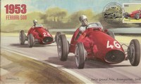 |
Charity Souvenir Cover featuring the 1952 F1 Season  |
1953
The Ferrari drivers continued to dominate; their drivers won seven of the eight Grand Prix. However, Fangio in his Maserati was able to offer some competition - he took second place in the championship. Ascari had an unbeaten run of nine race wins before his team-mate Mike Hawthorn broke the sequence and became the first ever British winner in the French Grand Prix at Reims after a thrilling battle with Fangio. All of the World Championship races (except the Indianapolis 500) continued to be run using Formula 2 regulations. This was the first truly global World Championship, with a race in Argentina being included. The Argentinian race was marred by an accident involving Ferrari's Giuseppe Farina, he crashed into an unprotected crowd, killing nine spectators - the first deaths in Formula 1.
The Ferrari drivers continued to dominate; their drivers won seven of the eight Grand Prix. However, Fangio in his Maserati was able to offer some competition - he took second place in the championship. Ascari had an unbeaten run of nine race wins before his team-mate Mike Hawthorn broke the sequence and became the first ever British winner in the French Grand Prix at Reims after a thrilling battle with Fangio. All of the World Championship races (except the Indianapolis 500) continued to be run using Formula 2 regulations. This was the first truly global World Championship, with a race in Argentina being included. The Argentinian race was marred by an accident involving Ferrari's Giuseppe Farina, he crashed into an unprotected crowd, killing nine spectators - the first deaths in Formula 1.
Constructor Title: No title awarded |
Driver Title: Alberto Ascari 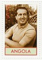 |
Charity Souvenir Cover featuring the 1953 F1 Season |
1954
The rules were changed - 2.5 litre un-supercharged engines were used. Mercedes re-entered Grand Prix racing for the first time since the war - their first race being the French Grand Prix at which they took a dominant 1-2 victory. Fangio was their lead driver - he switched from the Maserati team to join Mercedes, despite winning the first two races of the season with Maserati. Reigning champion Ascari left Ferrari for the newly formed Lancia team. However, Lancia's car, the D50, was not ready until the final World Championship race, meaning that Ascari had to miss most of the races and so was unable to defend his title.
The rules were changed - 2.5 litre un-supercharged engines were used. Mercedes re-entered Grand Prix racing for the first time since the war - their first race being the French Grand Prix at which they took a dominant 1-2 victory. Fangio was their lead driver - he switched from the Maserati team to join Mercedes, despite winning the first two races of the season with Maserati. Reigning champion Ascari left Ferrari for the newly formed Lancia team. However, Lancia's car, the D50, was not ready until the final World Championship race, meaning that Ascari had to miss most of the races and so was unable to defend his title.
Constructor Title: No title awarded |

Charity Souvenir Cover featuring the 1954 F1 Season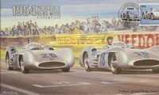 |
1955
The Mercedes drivers were once again the class of the field - Fangio took four wins and his new team mate, Stirling Moss, won the British Grand Prix (Aintree). Ferrari won at Monaco - where Ascari crashed into the harbour, but came away unscathed. The double World Champion was killed four days later while testing sports cars at Monza. The French, German, Spanish and Swiss Grand Prix were all cancelled following the disaster at the 24 Hours of Le Mans which killed a driver and over 80 spectators.
The Mercedes drivers were once again the class of the field - Fangio took four wins and his new team mate, Stirling Moss, won the British Grand Prix (Aintree). Ferrari won at Monaco - where Ascari crashed into the harbour, but came away unscathed. The double World Champion was killed four days later while testing sports cars at Monza. The French, German, Spanish and Swiss Grand Prix were all cancelled following the disaster at the 24 Hours of Le Mans which killed a driver and over 80 spectators.
Constructor Title: No title awarded |
Driver Title: Juan Manuel Fangio 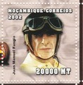 |
Charity Souvenir Cover featuring the 1955 F1 Season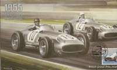 |
1956
Mercedes withdrew from Formula 1, so Fangio moved to Ferrari. Ferrari acquired the folded Lancia team's D50 cars. Fangio's team mate at Mercedes, Stirling Moss - now driving for Maserati, provided the biggest challenge to his title defence, each winning two races. The British Connaughts, Vanwalls and BRMs also showed potential. At the final race of the season, Fangio had an eight-point lead over team mate Peter Collins and Jean Behra, driving for Maserati. This meant that to lose the title he would have to not score and either Collins or Behra would have to win and set the fastest lap. Fangio retired from the race, which meant that Collins had a chance of winning his first title. Collins instead handed his car over to Fangio allowing him to finish second in the race and win his third title in a row.
Mercedes withdrew from Formula 1, so Fangio moved to Ferrari. Ferrari acquired the folded Lancia team's D50 cars. Fangio's team mate at Mercedes, Stirling Moss - now driving for Maserati, provided the biggest challenge to his title defence, each winning two races. The British Connaughts, Vanwalls and BRMs also showed potential. At the final race of the season, Fangio had an eight-point lead over team mate Peter Collins and Jean Behra, driving for Maserati. This meant that to lose the title he would have to not score and either Collins or Behra would have to win and set the fastest lap. Fangio retired from the race, which meant that Collins had a chance of winning his first title. Collins instead handed his car over to Fangio allowing him to finish second in the race and win his third title in a row.
Constructor Title: No title awarded |
Driver Title: Juan Manuel Fangio 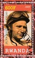 |
Charity Souvenir Cover featuring the 1956 F1 Season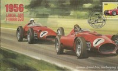 |
1957
Fangio moved from Ferrari to Maserati, replacing Stirling Moss, who moved to Vanwall. Vanwall were beginning to fulfil their early promise and between them Fangio and Moss won every Grand Prix of the season. Fangio took four wins to Moss' three. Ferrari failed to win a race; also, two of their drivers were killed in action. At the end of the season it was announced that Fangio would not return next year. Also, Maserati withdrew for financial reasons. This was the final year in which points were awarded for shared drives.
Fangio moved from Ferrari to Maserati, replacing Stirling Moss, who moved to Vanwall. Vanwall were beginning to fulfil their early promise and between them Fangio and Moss won every Grand Prix of the season. Fangio took four wins to Moss' three. Ferrari failed to win a race; also, two of their drivers were killed in action. At the end of the season it was announced that Fangio would not return next year. Also, Maserati withdrew for financial reasons. This was the final year in which points were awarded for shared drives.
Constructor Title: No title awarded |
Driver Title: Juan Manuel Fangio 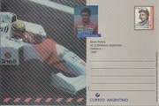 |
Charity Souvenir Cover featuring the 1957 F1 Season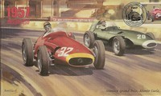 |
1958
The race lengths were reduced to 300 kilometres or a time duration of 2 hours. Until now, specialised alcohol-based racing fuels had been used, but this year it became compulsory to have to use commercial petrol. The International Cup for Formula 1 Manufacturers was awarded for the first time. The rear-engine Cooper-Climax was entered by the privateer Rob Walker - Moss' win in Argentina was the first for a mid-/rear-engine car in Formula 1. Hawthorn retired after winning the title, but was killed in a road accident in early 1959. His death compounded a tragic season for Formula 1, with four drivers killed during the year. Maria Teresa de Filippis became the first woman to drive in a World Championship event, driving a Maserati.
The race lengths were reduced to 300 kilometres or a time duration of 2 hours. Until now, specialised alcohol-based racing fuels had been used, but this year it became compulsory to have to use commercial petrol. The International Cup for Formula 1 Manufacturers was awarded for the first time. The rear-engine Cooper-Climax was entered by the privateer Rob Walker - Moss' win in Argentina was the first for a mid-/rear-engine car in Formula 1. Hawthorn retired after winning the title, but was killed in a road accident in early 1959. His death compounded a tragic season for Formula 1, with four drivers killed during the year. Maria Teresa de Filippis became the first woman to drive in a World Championship event, driving a Maserati.
Constructor Title: Vanwall |
Driver Title: Mike Hawthorn 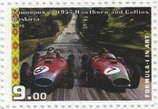 |
Charity Souvenir Cover featuring the 1958 F1 Season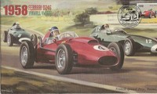 |
1959
Vanwall withdrew from Formula 1, believed to be on the grounds of the number of deaths in the 1958 season. So, Ferrari were considered to be the only race-winning team in the Championship. However, it turned out that the British would dominate - Cooper's rear engine cars won five races and BRM finally won a race. The inaugural United States Grand Prix was held - the final race of the season. Brabham was a leading contender for the title, but he ran out of fuel on the last lap, however, he managed to push his car across the line to finish fourth and secure the title.
Vanwall withdrew from Formula 1, believed to be on the grounds of the number of deaths in the 1958 season. So, Ferrari were considered to be the only race-winning team in the Championship. However, it turned out that the British would dominate - Cooper's rear engine cars won five races and BRM finally won a race. The inaugural United States Grand Prix was held - the final race of the season. Brabham was a leading contender for the title, but he ran out of fuel on the last lap, however, he managed to push his car across the line to finish fourth and secure the title.
Constructor Title: Cooper |

Charity Souvenir Cover featuring the 1959 F1 Season  |